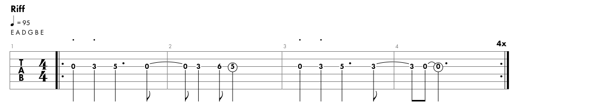

Smoke on the Water
Riff 
Author: Deep Purple
Rylics:
We all came out to Montreux
On the Lake Geneva shoreline
To make records with a mobile, yeah
We didn’t have much time now
Frank Zappa and the Mothers
Were at the best place around
But some stupid with a flare gun
Burned the place to the ground
Smoke on the water, a fire in the sky
(Smoke) on the water, you guys are great
They burned down the gambling house
It died with an awful sound
Funky Claude was running in and out
He was pulling kids out the ground now
When it all was over
Find another place
Swiss time was running out
It seemed that we would lose the race
Smoke on the water, a fire in the sky
Smoke on the water
Burn it down
We ended up at the Grand Hotel
It was empty, cold and bare
The Rolling truck Stones thing just outside
Huh, making our music there now
With a few red lights and a few old beds
We made a place to sweat
No matter what we get out of this
I know, I know we’ll never forget
Smoke on the water, a fire in the sky
Smoke on the water
(I can’t hear anything)
one more time
(Smoke on the water) hey!